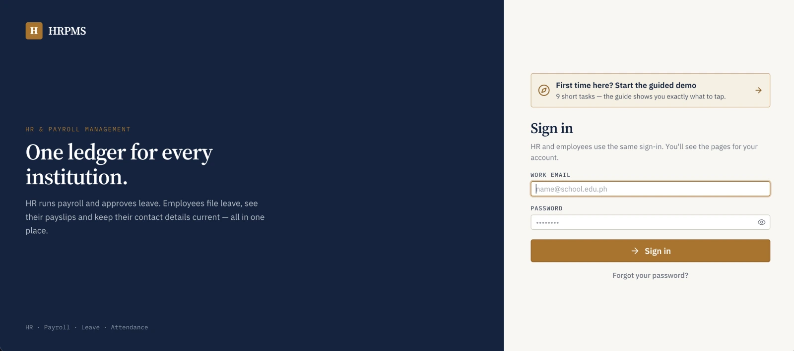

Case study 05 / 05 — School operations
HRPMS
An HR and payroll management system for a small Christian school, from employee leave requests to approved payroll and payslips.
- Audience
- School employees, HR and payroll staff
- Platform
- Web app
- Demo stack
- React, TypeScript, Tailwind CSS

At a glance
- People
- Employees submit leave and view their own attendance and payslips.
- HR
- School HR staff maintain employee records and review leave requests.
- Payroll
- A payroll officer prepares the draft. An approver reviews it before the run is finalized.
01 — Context
Managing the school office between paydays
The brief was to bring a small Christian school’s HR and payroll activities into one system. A teacher needs to see whether a leave request was approved. The office needs a record of that decision, and employees need access to their payslips after payday.
02 — Workflow
From a request to a signed-off pay run
An employee files leave through the staff portal and HR reviews the request. For each pay period, the payroll officer prepares a draft and submits it to the approver. Once the payroll run is finalized, employees can find their payslips in their own portal.
03 — Demo
Following the handoffs in the demo
The React and TypeScript demo provides sample accounts for each role. A reviewer can submit a request as an employee, switch to HR, and see that request waiting for review. Sample records are stored in the same browser so the workflow carries across sign-ins.